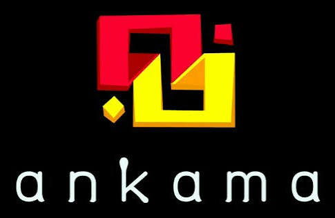
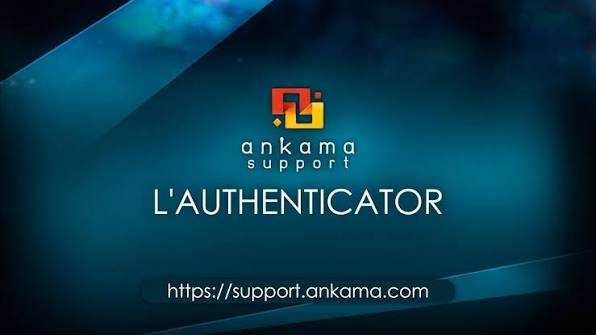

l'hisoire d'ankama

La création
Ankama est une entreprise française créée en 2001 à Roubaix. Au départ, elle travaillait surtout dans la création de sites Internet.

dofus
En 2004, Ankama sort Dofus, son premier grand jeu vidéo. Le jeu connaît rapidement un grand succès et devient le symbole de l’entreprise.

Le développement
Après Dofus, Ankama développe d’autres projets comme Wakfu, des mangas et des séries d’animation. L’entreprise crée ainsi tout un univers autour de ses jeux.
La diversification
Ankama se développe dans plusieurs domaines : jeux vidéo, édition, animation et produits dérivés. Cela permet à l’entreprise de toucher un public plus large.

Aujourd’hui
Aujourd’hui, Ankama continue de développer ses jeux et ses différents univers. L’entreprise reste notamment connue pour Dofus et Wakfu.